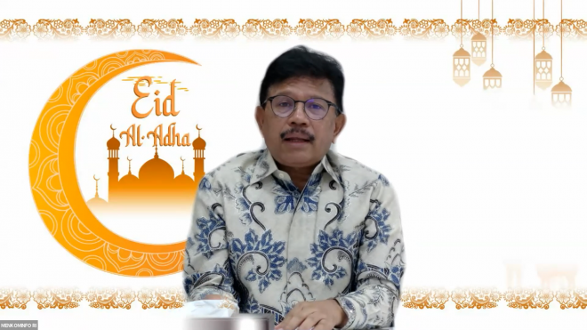

Berita
Juni 23,
2021
2 comments
Peringatan Idul Adha 1442 H di Kementerian Kominfo
Kegiatan ini dihadiri oleh Bapak Johnny G. Plate selaku Menteri Kominfo dan seluruh jajaran eselonisasi serta civitas pegawai di lingkungan Kominfo.